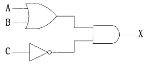
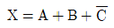
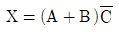
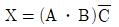
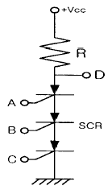
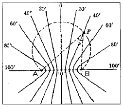

항로표지기사 (2004-08-08 기출문제)
1과목: 항로표지일반
1. 등명기에 설치하여 규정된 등질의 부호와 전구의 직류전압과 전류를 제어하고, 동작 중인 전구의 고장상태를 감시하여 전구교환기에 제어신호를 보내고 일광제어기의 제어신호를 받아 전구를 점등시키는 장치는?
- 섬광기
- 회전장치
- 전구교환기
- 항로표지용 전구
(정답률: 알수없음)

2. 항로표지법을 위반하여 과태료를 부과할 때 필요한 절차로서 맞는 것은 ?
- 법령 위반자에게는 일방적으로 과태료를 부과한다.
- 법령 위반시 서면으로 과태료 금액만을 명시하여 납부 하도록 통지한다.
- 과태료를 부과하기 전에 10일 이상의 기간을 정하여 과태료 처분 대상자에게 구술 또는 서면에 의한 진술기회를 주어야 한다.
- 과태료 부과에 대하여 지정된 의견 진술 기일이 경과 할 경우 7일 이상의 재 기일을 정하여 진술하도록 하며, 지정된 기일이 경과할 경우 의견이 없는 것으로 본다.
(정답률: 알수없음)
3. 항로상 좌·우측 한계선을 따라 설치해야 할 부표간의 평균거리와 해역의 조건을 가장 바르게 짝지은 것은?
- 외해 : 3마일 이상
- 준외해 : 2마일 내외
- 내해 : 1마일 정도
- 시계가 불량한 지역 : 0.5마일 정도
(정답률: 알수없음)
4. 항법의 종류가 아닌 것은?
- 천문항법
- 전파항법
- 추측항법
- 임의항법
(정답률: 알수없음)
5. 항로표지 기본요건에 해당하는 것은?
- 등고가 10m 이상이어야 한다.
- 180도 방위에서 관측이 가능해야 한다.
- 신뢰성이 높고 항상 이용이 쉬워야 한다.
- 광달거리가 30마일 이상이어야 한다.
(정답률: 알수없음)
6. 교차방위법에 의한 위치 산출시 물표의 선정에 있어서 주의사항으로 틀린 것은?
- 해도상의 위치가 명확하고, 뚜렷한 목표 선정
- 먼 물표보다는 적당히 가까운 물표 선택
- 물표 상호간의 각도가 50∼120도가 되는 것을 선정
- 물표가 많을 때에는 2개보다 3개 이상을 선정
(정답률: 알수없음)
7. 북방위표지의 도색으로 옳은 것은?
- 상부흑색, 하부황색
- 흑색바탕에 황색횡대
- 황색바탕에 흑색횡대
- 상부황색, 하부흑색
(정답률: 알수없음)
8. 해도상에서 간출암 높이의 기준면은?
- 평균수면
- 기본수준면
- 최고고조면
- 만조면
(정답률: 알수없음)
9. IALA의 등선, 등부표 및 랜비(LANBY)의 위치 이탈에 대한 권고내용으로 옳지 않은 것은?
- 등선, 등부표 및 랜비가 위치를 이탈하여 항해에 오해를 초래할 경우 이들에 속한 모든 항로표지들의 기능을 중지해야 한다
- 음향신호를 동작시키고자 하는 경우에는 국제 충돌 예방 규칙의 모스 신호 "D"를 발하여야 한다
- 레이콘을 설치하고자 할 경우에는 모스 신호 "O"을 표시하도록 한다
- 국제 출동 예방 규칙에 따른 등화표시는 하지 않아도 된다.
(정답률: 알수없음)
10. 항로표지법시행규칙 제2조에 의한 항로표지의 종류가 아닌 것은?
- 광파표지
- 형상표지
- 특수신호표지
- 해상교통신호표지
(정답률: 알수없음)
11. 무선표지에 이용되는 전파의 특성과 거리가 가장 먼 것은?
- 직진성
- 등속성
- 반사성
- 회절성
(정답률: 80%)
12. 항로표지 등질 중 색깔이 다른 종류의 빛을 교대로 내며 그 사이에 등광은 꺼지는 일이 없이 계속 빛을 내는 것은 무엇인가?
- 부동등
- 명암등
- 섬광등
- 호광등
(정답률: 알수없음)
13. 선박의 항해에 지장이 있는 천소, 암초, 침선 등을 표시하기 위한 항로표지는?
- 유도표지
- 연안표지
- 장애표지
- 특수표지
(정답률: 알수없음)
14. 방위표지의 설명으로 옳은 것은?
- 통항항로의 좌현측 및 우현측을 표시
- 나침의와 관련하여 항해자에게 가항수역을 표시
- 수로중앙표지와 같이 전 주변이 가항수역임을 표시
- 전 주변이 가항수역인 일정 규모의 고립장애물 표시
(정답률: 알수없음)
15. 현행 항로표지법시행규칙의 규정에 의한 항로표지의 종류 중 광파표지에 해당되는 것은?
- 입표
- 등부표
- 도표
- 부표
(정답률: 알수없음)
16. 수면하의 암초, 수면위의 암초, 방파제 끝단 등을 조사하여 통항선박에 그들 장해물의 소재를 알리기 위하여 설치된 항로표지는?
- 도등
- 지향등
- 교량등
- 조사등
(정답률: 알수없음)
17. 주어진 장소에 주어진 부표가 계류되어 있다고 가정하면 체인의 길이와 직경은 그 장소의 조류와 바람의 모든 상태에서 해저와 접선방향에 있어야 하며 계산된 강도에 대한 체인의 파단력의 비율은 조류와 바람이 가장 좋지 않은 상태에서 얼마이어야 하는가?
- 3 이하
- 3 이상
- 5 이하
- 5 이상
(정답률: 70%)
18. IALA 해상부표식에서 두표의 사용은 항해자가 표지를 시인하고 그 의미를 확신하는 것을 돕기 위하여 설치된다. 다음 중 규정에 맞지 않는 것은?
- 원추형두표 2개
- 원추형두표 1개
- 원통형두표 1개
- X형두표 2개
(정답률: 알수없음)
19. 국제항로표지협회(IALA) 해상부표식에서 A지역과 B지역이 서로 다르게 적용하는 표지는?
- 방위표지
- 측방표지
- 고립장애표지
- 안전수역표지
(정답률: 알수없음)
20. 등대 부근에 위험물이 있고 풍랑이나 조류 때문에 등부표를 설치하거나 관리하기가 어려운 경우 그 등대에 강력한 투광기를 설치하여 위험 구역만을 비추는 등화는?
- 도등
- 부등
- 전등
- 현등
(정답률: 알수없음)
2과목: 전기·전자기초
21. 절연저항에 대한 올바른 설명은?
- 주석(Sn), 실리콘(Si)과 같은 물질은 절연저항이 매우 크므로 전기의 절연물로 제일 많이 사용한다.
- 절연저항이 높은 물질은 도체 저항에 비해서 저항이 상당히 크며, 단위는 ㏁,즉 106Ω 을 사용한다.
- 절연물을 전극사이에 삽입하고 전압을 가하면, 전류가 흐르는데 절연물보다 연결한 선에서나 접촉 저항의 영향이 매우 크므로, 이를 절연저항이라 한다.
- 절연저항은 메거(Megger)라는 것을 사용하여 측정하며, 그 발생 전압은 25V, 50V, 100V, 250V 등이 있고 주로 50V인 메거를 가장 많이 사용한다.
(정답률: 알수없음)
22. 교류 전압의 실효치와 최대치의 관계를 바르게 설명한 것은?
- 실효치와 최대치는 같다.
- 실효치는 최대치의 1/2이다.
- 실효치는 최대치의 0.707배이다.
- 실효치는 최대치의 1.414배이다.
(정답률: 알수없음)
23. 우리나라 상용전원의 전기 주파수는 몇 [Hz]인가?
- 50
- 60
- 80
- 120
(정답률: 알수없음)
24. 유도 기전력 110[V], 전기자 저항 및 계자 저항이 각각 0.⑤[Ω ]인 직권발전기가 있다.부하전류가 100[A]라면 단자 전압[V]은?
- 110
- 1⑤
- 100
- 95
(정답률: 알수없음)
25. 다음은 태양전지에 관한 설명이다. 잘못된 것은?
- 원재료로는 실리콘 등이 사용된다.
- 전류는 입사광의 강도에 비례한다.
- 입사광의 파장은 한계파장 이상이어야 한다.
- 입사광에 의해 전자와 정공이 만들어진다.
(정답률: 60%)
26. 2[Ω], 3[Ω], 5[Ω]의 저항을 직렬로 접속하고 30[V]의 기전력을 인가하면 5[Ω]에 걸리는 전압강하는 몇 [V] 인가?
- 15
- 6
- 9
- 30
(정답률: 알수없음)
27. 축전지의 설비용량을 결정하는 사항이 아닌 것은?
- 부하의 크기와 성질
- 예상 정전 시간
- 순시 최대 방전 전류의 세기
- 충전 장치
(정답률: 알수없음)
28. 축전지의 충전방식이 아닌 것은?
- 급속충전
- 부동충전
- 균등충전
- 과충전
(정답률: 알수없음)
29. 무부하시 자여자가 되지 않는 직류기는?
- 직권기
- 분권기
- 복권기
- 타여자기
(정답률: 알수없음)
30. 다이오드를 사용한 정류회로에서 과대한 부하전류에 의하 여 다이오드가 파손될 우려가 있을 경우에 이를 방지하기 위해서는 다음중 어느 것이 적절한가?
- 다이오드를 병렬로 추가한다.
- 다이오드를 직렬로 추가한다.
- 다이오드 양단에 적당한 값의 저항을 추가한다.
- 다이오드 양단에 적당한 값의 콘덴서를 추가한다.
(정답률: 알수없음)
31. 자력선에 대한 설명 중 옳지 않은 것은?
- N극에서 나와 S극에서 끝난다.
- 자력선은 서로 교차한다.
- 자력선에 그은 접선은 그 접선에서의 자기장의 방향을 나타낸다.
- 한 점의 자력선 밀도는 그 점의 자기장의 세기를 나타낸다.
(정답률: 90%)
32. 직류 발전기의 단자 전압을 조정하기 위해 사용하는 것은?
- 전기자 저항기
- 가동 저항기
- 계자 방전 저항기
- 계자 저항기
(정답률: 알수없음)
33. 태양광 발전의 장점이 아닌 것은?
- 소음과 유해한 폐기물이 발생되지 않는다.
- 구조가 간단하다.
- 유지, 보수가 어렵다.
- 수명이 길다.
(정답률: 알수없음)
34. 단위전하를 점 A에서 점 B까지 운반하는데 필요한 일을 A, B사이의 ( )라 한다. ( )안에 들어갈 단어는?
- 전류
- 전위차
- 전속
- 유전율
(정답률: 알수없음)
35. 직류 복권 발전기의 병렬운전에 필요한 것은?
- 여자 모선
- 보상 권선
- 균압선 접속
- 브러시의 이동
(정답률: 알수없음)
36. 2차 전지는 어떤 전지인가?
- 납축전지
- 망간 건전지
- 볼타 전지(Voltaic cell)
- 루크란제(Leclache) 전지
(정답률: 알수없음)
37. 다음 그림과 같은 무접점회로의 논리식은?

- X=A+B+C



(정답률: 알수없음)
38. 직류 전용으로 사용되는 계측기의 종류는 무엇인가?
- 유도형
- 가동 코일형
- 진동형
- 정류형
(정답률: 알수없음)
39. 그림의 입력 A, B, C와 출력 D와의 관계는?

- NAND
- NOR
- OR
- NOT
(정답률: 알수없음)
40. 무정전 전원장치(UPS)의 핵심 장치가 아닌 것은?
- 축전지
- 인버터
- 발전장치
- 정류기
(정답률: 알수없음)
3과목: 광파·음파표지
41. 빛의 광도, 대기투과율, 관측자의 눈에서 조도의 역치에 의하여 결정되는 광달거리를 무엇이라 하는가?
- 지리학적 광달거리
- 광학적 광달거리
- 명목적 광달거리
- 명시적 광달거리
(정답률: 알수없음)
42. 등명기에 설치하여 주 동작전구가 단선 되었을 때 섬광기 또는 일광제어기로부터 제어신호를 받아 예비전구로 자동 절환되는 장치를 무엇이라 하는가?
- 일광제어기(Photo Cell)
- 전구교환기(Lamp Changer)
- 색 필터(Colour Filter)
- 섬광기(Flasher)
(정답률: 알수없음)
43. 다음의 여러 물리적 원리와 법칙 중 파동을 설명하는 것은?
- 아르키메데스의 원리
- 파스칼의 원리
- 호이겐스의 원리
- 뉴우톤의 운동의 법칙
(정답률: 75%)
44. 등부표 안정성 계산시 풍속은 통상 수면상 몇 미터 위치의 바람속도를 평균하여 결정하는가?
- 5m
- 10m
- 20m
- 35m
(정답률: 100%)
45. 음파표지의 설계시 고려사항으로 맞지 않은 것은?
- 이용범위에 대하여 충분한 음향이 되도록 강력한 무신호를 설치할 것
- 음향학적으로 발생음파는 전파특성 및 측정자의 가청능력에 대하여 우수할 것
- 기상, 해상의 영향에 의하여 음향이 감쇄되지 않고, 전파 방위의 변화가 적도록 설치 위치를 설정할 것
- 부근의 지형에 의하여 음향이 반사 및 굴절될 수 있도록 위치를 선정할 것
(정답률: 알수없음)
46. 다음 중 광파표지의 기본 요건이 아닌 것은?
- 요구되는 범위내에서 충분히 볼 수 있어야 한다.
- 섬광과 암간이 적당한 간격으로서 항해자가 쉽게 식별 할 수 있도록 반복되어야 한다.
- 등명기의 광원은 가능한 한 효율이 높고 신뢰성이 있어야 한다.
- 항해자가 다른 등화와 식별 할 수 있도록 등광에 개성을 주지 않는다.
(정답률: 알수없음)
47. 다음 중 광도의 단위는?
- lx
- cd
- nm
- lm
(정답률: 알수없음)
48. 가스(gas) 또는 전구를 사용한 광원에서 나온 빛을 렌즈 또는 반사경을 이용하여 굴절 반사시켜 빛을 모아 외부로 방사하는 조명기구를 무엇이라 하는가?
- 등명기
- 도등
- 지향등
- 섬광기
(정답률: 70%)
49. 전자석을 써서 특수금속판을 진동시켜 취명하며 강력한 음향을 발하고 조작이 비교적 용이한 무신호기는?
- 에어사이렌
- 다이야폰
- 모터사이렌
- 다이야후램폰
(정답률: 알수없음)
50. 주로 항로의 폭이나 항로의 변침점 등을 명시하기 위해 설치되어 있는 표지로서 해저의 일정한 지점에 체인(chain)으로 연결되어 떠있는 것은?
- 등대
- 등표
- 등부표
- 등주
(정답률: 알수없음)
51. 등대의 설계시에 고려하여야 할 설계파고(Hd)란 해당하는 구조물에 작용하는 어떤 파고를 말하는가?
- 평균파고
- 최저파고
- 최대파고
- 쇄파한계파고
(정답률: 알수없음)
52. 다음 중 등표의 표지 요건에 관한 설명으로 옳지 않은 것은?
- 해상 및 기상조건을 고려하여 충분한 광달거리를 가져야 한다.
- 소형 선박으로 속력이 6~10노트 일 때 1∼4마일 거리로 설치한다.
- 주표로서 역할을 하기 위하여 등탑의 직경은 1.5m 미만이어야 한다.
- 광달거리는 내해 2마일, 외해 5마일 정도로 둘 수 있다.
(정답률: 알수없음)
53. 렌즈의 회전에 의하여 섬광시간을 구할 때의 요소가 아닌 것은?
- 대기투과율
- 렌즈의 회전수
- 발광체의 폭
- 렌즈의 초점거리
(정답률: 알수없음)
54. 각 등화에는 등광의 발사상태가 정해져 있는데, 이와 같이 등화에 따라 정해진 등광 발사 상태를 무엇이라 하는가?
- 등질
- 등색
- 렌즈
- 등기
(정답률: 알수없음)
55. 다음 중 빛의 스펙트럼에 대하여 올바르게 설명한 것이 아닌 것은?
- 스팩트럼은 빛의 굴절현상이다.
- 파란색은 빨간색에 비하여 굴절률이 작다.
- 스펙트럼은 가시광선에 해당한다.
- 남색은 초록색에 비하여 굴절률이 크다.
(정답률: 알수없음)
56. 부표에 작용하는 수직력과 체인의 중량과의 관계를 바르게 설명한 것은?
- 부표에 작용하는 수직력은 체인의 전 중량과 같다.
- 부표에 작용하는 수직력은 체인의 전 중량보다 작다.
- 부표에 작용하는 수직력은 체인의 전 중량과는 무관하다.
- 부표에 작용하는 수직력은 체인의 전 중량보다 크다.
(정답률: 알수없음)
57. 다음중 눈부심(Glare)현상의 원인에 대한 설명으로 적합하지 않은 것은?
- 고휘도의 광도 또는 반사물체가 있을 경우
- 광원과 그 주위의 휘도차가 대단히 클 경우
- 눈에 들어오는 광원의 시각이 작을 경우
- 눈이 낮은 휘도 수준(level)에 순응할 경우
(정답률: 알수없음)
58. 광파표지의 등화의 등질을 여러 가지로 하고, 발사 상태도 다르게 한 이유가 아닌 것은?
- 일반 등화와의 식별을 쉽게하기 위해서
- 부근의 다른 광파표지와 오인을 막기 위해서
- 선박의 현등과 구별하기 위해서
- 야간에 식별하기 쉽도록
(정답률: 알수없음)
59. 등대표에 광달거리를 기재할 때 기상학적 시정기준은?
- 5해리
- 10해리
- 15해리
- 20해리
(정답률: 알수없음)
60. 선박의 교통량이 많은 항로, 항구, 해협 또는 암초가 많은 곳에서 등광, 형상, 채색, 음향, 전파 등의 수단에 의해 선박의 항행을 돕기 위한 인위적인 시설을 무엇이라고 하는가?
- 항로표지
- 해도도식
- 항행통보
- 수로서지
(정답률: 알수없음)
4과목: 전파표지 및 시스템이용
61. 레이더에서 Pulse파를 사용하는 이유를 설명한 것이다. 옳지 않은 것은?
- 광대역 신호를 보낼 수 있다.
- 회절이 많고 직진성이 좋다.
- 파장이 짧으며 작은 물체라도 반사가 잘 된다.
- 지향성이 좋다.
(정답률: 알수없음)
62. 그림은 기선 AB의 길이가 100마일이고, 거리차가 0, 20, 40마일 등 쌍곡선군을 나타낸 것이다. 틀리게 설명한 것은?

- 각 쌍곡선과 기선의 교차된 점의 간격은 모두 같다.
- 쌍곡선의 간격은 기선상에서 가장 짧고, 기선에서 멀어짐에따라 커진다.
- 거리의 변화가 20마일의 쌍곡선군인 경우 기선상의 간격도 20마일로 일정하다.
- AB 두 점사이의 거리차가 같은 점을 이으면 쌍곡선이 된다.
(정답률: 알수없음)
63. GPS 측위오차 중 경로오차가 아닌 것은?
- 위성시계오차
- 전리층 전파오차
- 대류권 전파오차
- 멀티패스 오차
(정답률: 알수없음)
64. 건조지역이고 바위산으로 대지 도전율이 나쁜 곳에 접지 안테나를 설치하고자 한다. 이곳에 적합한 접지방식은?
- 심굴 접지
- 카운터 포이즈
- 방사성 접지
- 다중 접지
(정답률: 알수없음)
65. 차단주파수 이상의 교류는 용이하게 통과시키고 그 주파수 이하의 교류에 대하여 큰 감쇠를 주는 필터는?
- 저역통과필터(LPF)
- 고역통과필터(HPF)
- 대역통과필터(BPF)
- 대역소거필터(BEF)
(정답률: 알수없음)
66. 선박이 레이콘에 근접하여 항해할 때 레이다 스코프상에 나타나는 비콘 신호현상을 가장 적합하게 설명한 것은?
- 신호가 명료하게 나타난다.
- 허상이 생긴다.
- 신호가 2배 이상 크게 나타난다.
- 연속된 원으로 보여 다른 물표를 탐지할 수 없다.
(정답률: 92%)
67. Radar 시스템에서 최대탐지거리를 2배로 하려면 최대전력을 몇 배로 하여야 하는가?
- 4 배
- 8 배
- 12 배
- 16 배
(정답률: 알수없음)
68. 로란-C는 100㎑의 주파수를 사용하는 쌍곡선항법으로 주야간 이용범위 및 위치선 오차가 다르다. 다음 중 옳은 것은?
- 주간의 이용범위는 1600마일 내외이며, 오차는 0.25∼1마일이다.
- 주간의 이용범위는 1200마일 내외이며, 오차는 5∼10마일이다.
- 야간의 이용범위는 1900마일 내외이며, 오차는 1∼3마일이다.
- 야간의 이용범위는 2300마일 내외이며, 오차는 5∼10마일이다.
(정답률: 알수없음)
69. GPS와 같은 위성항법시스템으로 러시아에서 운용중인 위치측정 시스템은?
- CHAYKA
- GLONASS
- NNSS
- GALILEO
(정답률: 알수없음)
70. 전파의 편성에 의한 분류에 해당하지 않는 것은?
- 직선편파
- 원편파
- 타원편파
- 곡선편파
(정답률: 알수없음)
71. 전리층(F층) 반사를 이용하여 원거리 통신에 가장 적합한 전파는?
- LF
- MF
- HF
- VHF
(정답률: 알수없음)
72. 갑작스런 바람의 영향 등으로 우발적으로 생기며 재현성이 없어서 보정이 불가능한 오차는?
- 이론오차
- 기기오차
- 우연오차
- 개인오차
(정답률: 알수없음)
73. 정격부하 때 전압이 200[V], 무부하시 전압이 250[V]인 전원이 있을 때 전압 변동율은?
- 20[%]
- 25[%]
- 30[%]
- 35[%]
(정답률: 60%)
74. 쌍곡선 전파항법장치로 현재 이용이 되는 것은?
- Radio Beacon
- Loran-C
- GLONASS
- GPS
(정답률: 알수없음)
75. GPS 인공위성에 대한 설명으로 틀린 것은?
- 고도 약 20,200km의 중고도위성이다.
- 적도승교각 약 30도의 원궤도면을 따라 움직인다.
- 6개의 궤도면에 4개씩의 위성이 배치된다.
- 공전주기는 약 12시간이다.
(정답률: 알수없음)
76. 다음은 지표파(Ground Wave)의 전파(傳播) 성질에 대한 설명이다. 잘못 설명된 것은?
- 지구표면을 따라서 주로 전파한다.
- 주파수가 낮을수록 감쇠가 적다.
- 유전율이 적을수록 감쇠가 적다.
- 도전율이 클수록 감쇠가 크다.
(정답률: 90%)
77. 태양광 발전시스템의 기본 설계에 있어 태양전지 어레이(Solar Array) 설치 입지선정에 적합하지 않는 것은?
- 지형적인 여건상 최대 일조시간을 얻기 위하여 정남을 중심으로 동으로 30도 또는 서로 10도 범위내로 어레이 방향을 조정한다.
- 어레이 방향을 결정한 후 태양전지 설치장소가 45도이내의 경사면일 경우는 경사면을 그대로 이용해도 된다.
- 평지에 태양전지 어레이를 설치하는 경우는 반드시 사방으로 방풍벽을 설치한다.
- 어레이 전면에 음영을 줄 수 있는 장애물을 반드시 제거하거나 피해서 설치하여야 한다.
(정답률: 50%)
78. 조류신호표지의 구성요소가 아닌 것은?
- 조류의 유속과 유향을 계측하는 센서부
- 계측된 데이터를 통제소에 전송하는 전송시스템
- 실시간 조류의 유향, 유속을 이용자에게 전하는 전광표지판
- 전광표지판을 제어하는 전원제어장치
(정답률: 알수없음)
79. 기선상에 있는 로란-C 종국의 감시용 수신기로부터의 정보를 이용한 기선통제방법에 해당하는 것은?
- Alpha 통제
- Bravo 통제
- Charlie 통제
- Delta 통제
(정답률: 알수없음)
80. 우리나라의 DGPS 기준국의 권역별 이용에 관한 설명으로 적합한 것은?
- 서해권 - 팔미도기준국, 영도기준국
- 남해권 - 거문도기준국, 어청도기준국
- 동해권 - 주문진기준국, 저진기준국
- 남해동부 - 호미곶기준국, 홍도기준국
(정답률: 55%)